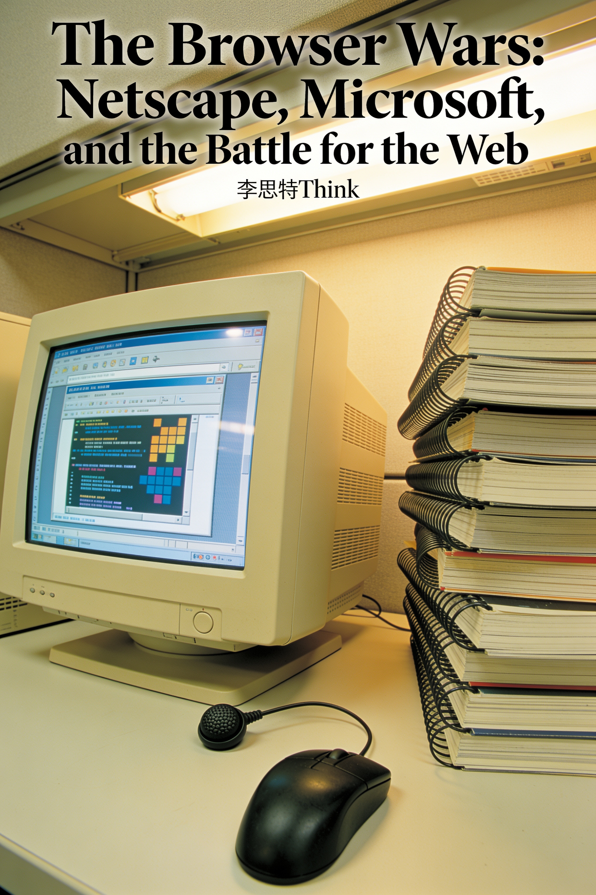

Technology · English
The Browser Wars: Netscape, Microsoft, and the Battle for the Web
Netscape, Microsoft, and the Battle for the Web
About this book
The browser wars were more than a software rivalry; they were a defining struggle over who would control the gateway to the internet. This trade history chronicles the epic clash between Netscape and Microsoft, revealing how Marc Andreessen’s vision of the browser as an operating system provoked Bill Gates to weaponize Windows distribution. Beyond corporate maneuvering, the narrative explores the antitrust battles, open-source rebellions, and standards fights that reshaped the digital landscape. From Mosaic and Internet Explorer to Mozilla and Chrome, this account examines the human drama of executives, engineers, regulators, and developers who determined the web's future. Blending technical insight with strategic analysis, it explains how early conflicts over platform control established the modern internet ecosystem. A rigorous examination of business strategy and technological evolution, this book illuminates the high-stakes decisions that transformed a simple viewing tool into the foundation of contemporary digital life.